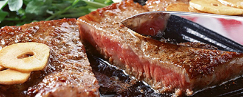

<!DOCTYPE html>
<html>
	<head>
		<meta charset="UTF-8">
		<title>新闻资讯</title>
		<link rel="stylesheet" type="text/css" href="css/common.css"/>
		<link rel="stylesheet" type="text/css" href="css/style.css"/>
		<link rel="stylesheet" type="text/css" href="css/bootstrap.min.css"/>
		<script src="js/jquery-3.3.1.js" type="text/javascript"></script>
		<script type="text/javascript" src="js/include.js"></script>


		<script>
            function getNews(currentPage, rows) {
                $("#news").html('<p class="newslist-tit">新闻资讯</p>');
                
                $.ajax({
                    // 编写json格式，设置属性和值
                    url: "news/getNewsByPage",
                    //contentType:"application/json;charset=UTF-8",
                    //解析json对象为标准的json串
                    data: "currentPage=" + currentPage + "&rows=" + rows + "",
                    type: "post",
                    success: function (data) {
                        var totalPage=data.totalPage;
                        var pages="";
                        var begin;
                        var end;
                        if (totalPage>10){
                            if (currentPage<=5){
                                begin=1;end=10
                            }
                            else if (currentPage>totalPage-4){
                                begin=totalPage-10;
                                end=totalPage;
                            } else {
                                begin=currentPage-5;
                                end=currentPage+4;
                            }
                        }else {
                            begin=1;
                            end=totalPage;
                        }
                        if (currentPage==1){
                            pages=pages+"<li class=\"threeword\" ><a href=\"#\">上一页</a></li>";
                        }else {
                            var lastPage=currentPage-1;
                            pages=pages+"<li class=\"threeword\" onclick=\"getNews("+lastPage+",\'"+rows+"\')\" ><a href=\"#\">上一页</a></li>";
                        }

                        for (var i = begin; i <= end; i++) {
                            if(currentPage==i) {
                                var everyPage=" <li class=\"active\" onclick=\"getNews("+i+",'"+rows+"')\"><a href=\"javascript:void(0)\">"+i+"</a></li>";
                                //var everyPage="<li onclick=\'load("+i+","+cid+",'"+rname+"')' class=\"curPage\"><a href='javascript:void(0)'>"+i+"</a></li>";
                            }else {
                                var everyPage=" <li onclick=\"getNews("+i+",'"+rows+"')\"><a href=\"javascript:void(0)\">"+i+"</a></li>";
                                //var everyPage="<li onclick='load("+i+","+cid+",'"+rname+"')'><a href='javascript:void(0)'>"+i+"</a></li>";
                            }
                            pages =pages+everyPage;

                        }

                        if (currentPage<totalPage){
                            var next=currentPage+1;
                            var nextPage="<li class=\"threeword\" onclick=\"getNews("+next+",\'"+rows+"\')\" id=\"nextPage\"><a href=\"javascript:void(0);\">下一页</a></li>";
                            pages+=nextPage;
                        }else {
                            var nextPage="<li class=\"threeword\" id=\"nextPage\"><a href=\"javascript:void(0);\">下一页</a></li>";
                            pages+=nextPage;
                        }
                        var endPage="<li class=\"threeword\" onclick=\"getNews("+totalPage+",\'"+rows+"\')\"><a href=\"javascript:void(0);\">末页</a></li>";
                        $("#pageNum").html(pages);


                        $.each(data.list, function (index, obj) {
                            $("#news").append('<dl class="newslist-box clearfix">\n' +
                                '\t\t\t\t<dt class="newslist-pic">\n' +
                                '\t\t\t\t\t\n' +
                                '\t\t\t\t</dt>\n' +
                                '\t\t\t\t<dd class="newslist-txt">\n' +
                                '\t\t\t\t\t<a href="news-con.html" class="newslist-font24">'+obj.title+'</a>\n' +
                                '\t\t\t\t\t<ul class="newslist-ul">\n' +
                                '\t\t\t\t\t\t<li class="newslist-li">\n' +
                                '\t\t\t\t\t\t\t<p class="newslist-time">'+obj.time+'</p>\n' +
                                '\t\t\t\t\t\t</li>\n' +
                                '\t\t\t\t\t\t<li class="newslist-li">\n' +
                                '\t\t\t\t\t\t\t<a href="news-con.html" class="newslist-con">'+obj.content+'</a>\n' +
                                '\t\t\t\t\t\t</li>\n' +
                                '\t\t\t\t\t\t<li class="newslist-li">来自'+obj.from+'<a class="newslist-link" href="news-con.html">&lt;阅读全文&gt;</a></li>\n' +
                                '\t\t\t\t\t</ul>\n' +
                                '\t\t\t\t</dd>\n' +
                                '\t\t\t</dl>\n' +
                                '\t\t\t<span class="news-line">\n' +
                                '\t\t\t\t\n' +
                                '\t\t\t</span>')
                        })
                    }
                });
            }
			$(function () {
                getNews(1,6)
            })

		</script>
	</head>
	<body>
	<div id="header"></div>
	<!--	<div class="clearfix nav">
			<a class="logo" href="javascript:;"></a>
			<ul class="clearfix nav-wrap">
				<li><a class="nav-item" href="index.html">首页</a></li>
				<li><a class="nav-item" href="pinpai.html">品牌故事</a></li>
				<li><a class="nav-item" href="meishi.html">美食系列</a></li>
				<li><a class="nav-item" href="shop.html">店面展示</a></li>
				<li><a class="nav-item nav-active" href="news.html">新闻资讯</a></li>
				<li><a class="nav-item" href="about-us.html">关于我们</a></li>
			</ul>
		</div>-->
		
	<!--	<div id="container">
			<div id="buttons">
		        <span index="1" class="on"></span>
		        <span index="2"></span>
		        <span index="3"></span>
		    </div>
		    <a href="javascript:;" id="prev" class="arrow"></a>
		    <a href="javascript:;" id="next" class="arrow"></a>
		</div>-->
		
	
		<div class="newslist-wrap" id="news">
			<!--<p class="newslist-tit">新闻资讯</p>-->
			<!--<dl class="newslist-box clearfix">
				<dt class="newslist-pic">
					
				</dt>
				<dd class="newslist-txt">
					<a href="news-con.html" class="newslist-font24">西餐代表 牛排的种类和吃法</a>
					<ul class="newslist-ul">
						<li class="newslist-li">
							<p class="newslist-time">2016.12.25</p>
						</li>
						<li class="newslist-li">
							<a href="news-con.html" class="newslist-con">提到牛排，脑子里就会想到焦棕褐色、表面扶着香甜的肉汁，切开后的粉红肉质，入口之后留下的满口肉香。吃牛排其实是非常讲究的，精致的牛肉配上美味的香料，加以烹调，是款待尊贵客人的最佳美食。</a>
						</li>
						<li class="newslist-li"><a class="newslist-link" href="news-con.html">&lt;阅读全文&gt;</a></li>
					</ul>
				</dd>
			</dl>
			<span class="news-line">
				
			</span>
			<dl class="newslist-box clearfix">
				<dt class="newslist-pic">
					
				</dt>
				<dd class="newslist-txt">
					<a href="news-con.html" class="newslist-font24">西餐代表 牛排的种类和吃法</a>
					<ul class="newslist-ul">
						<li class="newslist-li">
							<p class="newslist-time">2016.12.25</p>
						</li>
						<li class="newslist-li">
							<a href="news-con.html" class="newslist-con">提到牛排，脑子里就会想到焦棕褐色、表面扶着香甜的肉汁，切开后的粉红肉质，入口之后留下的满口肉香。吃牛排其实是非常讲究的，精致的牛肉配上美味的香料，加以烹调，是款待尊贵客人的最佳美食。</a>
						</li>
						<li class="newslist-li"><a class="newslist-link" href="news-con.html">&lt;阅读全文&gt;</a></li>
					</ul>
				</dd>
			</dl>
			<span class="news-line">
				
			</span>
			<dl class="newslist-box clearfix">
				<dt class="newslist-pic">
					
				</dt>
				<dd class="newslist-txt">
					<a href="news-con.html" class="newslist-font24">西餐代表 牛排的种类和吃法</a>
					<ul class="newslist-ul">
						<li class="newslist-li">
							<p class="newslist-time">2016.12.25</p>
						</li>
						<li class="newslist-li">
							<a href="news-con.html" class="newslist-con">提到牛排，脑子里就会想到焦棕褐色、表面扶着香甜的肉汁，切开后的粉红肉质，入口之后留下的满口肉香。吃牛排其实是非常讲究的，精致的牛肉配上美味的香料，加以烹调，是款待尊贵客人的最佳美食。</a>
						</li>
						<li class="newslist-li"><a class="newslist-link" href="news-con.html">&lt;阅读全文&gt;</a></li>
					</ul>
				</dd>
			</dl>
			<span class="news-line">
				
			</span>
			<dl class="newslist-box clearfix">
				<dt class="newslist-pic">
					
				</dt>
				<dd class="newslist-txt">
					<a href="news-con.html" class="newslist-font24">西餐代表 牛排的种类和吃法</a>
					<ul class="newslist-ul">
						<li class="newslist-li">
							<p class="newslist-time">2016.12.25</p>
						</li>
						<li class="newslist-li">
							<a href="news-con.html" class="newslist-con">提到牛排，脑子里就会想到焦棕褐色、表面扶着香甜的肉汁，切开后的粉红肉质，入口之后留下的满口肉香。吃牛排其实是非常讲究的，精致的牛肉配上美味的香料，加以烹调，是款待尊贵客人的最佳美食。</a>
						</li>
						<li class="newslist-li"><a class="newslist-link" href="news-con.html">&lt;阅读全文&gt;</a></li>
					</ul>
				</dd>
			</dl>
			<span class="news-line">
				
			</span>
			<dl class="newslist-box clearfix">
				<dt class="newslist-pic">
					
				</dt>
				<dd class="newslist-txt">
					<a href="news-con.html" class="newslist-font24">西餐代表 牛排的种类和吃法</a>
					<ul class="newslist-ul">
						<li class="newslist-li">
							<p class="newslist-time">2016.12.25</p>
						</li>
						<li class="newslist-li">
							<a href="news-con.html" class="newslist-con">提到牛排，脑子里就会想到焦棕褐色、表面扶着香甜的肉汁，切开后的粉红肉质，入口之后留下的满口肉香。吃牛排其实是非常讲究的，精致的牛肉配上美味的香料，加以烹调，是款待尊贵客人的最佳美食。</a>
						</li>
						<li class="newslist-li"><a class="newslist-link" href="news-con.html">&lt;阅读全文&gt;</a></li>
					</ul>
				</dd>
			</dl>-->
		<!--	<ul class="shop-paging clearfix">
				<li><a href="javascript:;" class="pag-item">&lt;</a></li>
				<li><a href="news.html" class="pag-item pag-active">1</a></li>
				<li><a href="javascript:;" class="pag-item">2</a></li>
				<li><a href="javascript:;" class="pag-item">3</a></li>
				<li><a href="javascript:;" class="pag-item">4</a></li>
				<li><a href="javascript:;" class="pag-item">&gt;</a></li>
			</ul>-->
		</div>
		<!--<div class="foot">
			<div class="foot-wrap">
				<p class="foot-tit">友情链接</p>
				<ul class="foot-link clearfix">
					<li class="foot-pic">
						<a href="javascript:;"></a>
					</li>
					<li class="foot-pic">
						<a href="javascript:;"></a>
					</li>
					<li class="foot-pic">
						<a href="javascript:;"></a>
					</li>
					<li class="foot-pic">
						<a href="javascript:;"></a>
					</li>
					<li class="foot-pic">
						<a href="javascript:;"></a>
					</li>
					<li class="foot-pic">
						<a href="javascript:;"></a>
					</li>
				</ul>
				<div class="copyright">
					<p>CopyRight©2003-2015 www.91cy.cn All rigt rederved</p>
					<p>版权所有：贵族食代牛排有限公司</p>
					<p>ICP备案号：京ICP备16047255号-3本站信息由会员自主添加，如信息涉及隐私等，网站不承担任何责任！</p>
				</div>
			</div>-->
		</div>

	<div class="container">
		<nav>
			<ul class="pagination" id="pageNum">
			</ul>
		</nav>
	</div>

	<div id="footer"></div>
		
	</body>
</html>
